大家知道，人类的语言，也有语法规范。人类说话交流，都在按照语法进行表达。但，人们在交流的时候，如果违反了语法规则，也许依然可以不影响交流。比如一个老外说中文，即使错误很多，作为中国人，也能大致明白。但是，计算机科学是一门精准的科学，计算机程序设计语言却必须严格按照语法要求来书写程序，违反任何一点，都会让C语言源程序无法通过编译，造成编译错误，最终也就无法正确运行。
所以，学好C语言的基础语法，是学习和运用C语言的第一步。
学习任何程序设计语言，一般都是先从”Hello world”程序开始，通过这样一个简单的程序，大家就可以学会在不同的平台如何搭建起一个开发环境来编写，编译，运行以及调试一个该语言书写的程序。”Hello world”是“世界您好”的意思。学习C语言也可以从“Hello world”开始。该程序的主要功能就是运行后，在屏幕上打印出一个“Hello world”语句。
下面也直截了当，首先抛开复杂的理论，演示如何从头开始来编写和运行C语言中的”Hello world”这个程序，让大家有一个对用C语言写程序的初步印象。在一个文本编辑器里，按照下面的格式敲入下面的C语言代码，也就是Hello world的源代码。
/* this is the first C language */
#include <stdio.h>
int main(void)
{
//print “hello world” as follows
printf(“hello world\n”);
return 0;
}
//hello.c hello.cpp hello.h
这就是C语言的第一个程序：Hello world的源代码。这是一个很简单的C语言程序，只打印一条“Hello world”语句。现在来逐一分析一下这个简单的C语言程序的结构。
首先，第一行，是程序的注释。注释是对代码的一些解释或者说明。注释是不会被编译进程序里执行的。所以，注释是一种辅助的信息，即使从程序源码里去掉，也不会影响程序的执行。当然这不是说注释不重要或者可有可无。良好的注释，有助于代码的维护和理解。
C语言的注释风格有两种。第一种为/*some comments*/，块注释。另一种为//开头的注释，比如：//some comments。第一种注释可以注释一行或者若干块。而第二种，只注释一行。
第二行是一个#include <stdio.h>。它的作用是包含了一个C语言库中的一个头文件：stdio.h。这样，在下面的代码中，就可以引用在这个头文件中定义的函数：printf()。
第三行到第八行，是一个函数，main函数。其中第三行的int main(void)中，第一个int是main函数运行结束之后的返回值部分，int表示main函数将会返回一个整数类型的值（比如返回0或者1表示成功，返回-1表示失败等）。Main是函数的名称，括号中间的void表示main函数不接受任何参数。
Main函数是程序执行的主入口。也就是程序是从main函数开始执行的。一个C语言程序，都必须有一个main函数。
第四行与第八行是一对花括号。一个函数的主体就被包含在一对花括号之间。至于函数的更多知识，会在接下来的章节做更多的介绍。
第五行是一个用//注释的语句，告诉大家下面的代码要打印一个”hello world”。
第六行就是该程序最核心的语句，执行该语句之后，程序就会打印出一个”hello world”作为输出。此语句调用了一个在stdio.h头文件中定义的printf函数，printf函数会将传递给该函数的”hello world”输入参数打印。
第七行是一个返回语句。main函数执行完之后，如果需要返回给调用者一个值，就需要调用return语句来返回对应的值。由于该main函数需要返回一个int值，所以就直接调用了return 0;语句返回0作为返回值。
假如需要main函数返回一个值，可以修改代码如下：
/* this is the first C language */
#include <stdio.h>
int main(void)
{
//print “hello world” as follows
printf(“hello world\n”);
return 0;
}
//hello.c hello.cpp hello.h
这样，main函数的返回值为int类型，并在函数的最后调用了return 0来负责返回了一个整型的0值给调用者（执行程序的一方）。
C语言代码的每一句之后，都以分号”;”结束。如果不跟分号，程序将会报错而无法编译和运行。
分析完了C语言代码之后，接下来就得想办法把这段代码编译，然后运行，才能最终看到程序运行的效果。
C语言一开始就具有跨平台的特性。因此，C语言程序既可以在Windows平台编译与运行，也可以在Linux等系统上编译运行。本书将介绍这两种平台下C程序的编译与运行。
首先以Hello world为例子，介绍一下如何在Windows平台里编译和执行C语言程序。要在Windows平台开发C程序，需要先安装一个IDE工具。IDE工具集成了代码编辑，编译，连接，执行等功能。
目前Windows上最主流的IDE环境是MS推出的VC系列，比如VC 6.0，Visual Studio 2008，Visual Studio 2010，Visual Studio 2012等。它们都可以用来作为学习C语言的IDE工具。
本书将介绍如何使用VC6.0和Visual Studio 2008开发C程序。
2.1.1 VC 6.0
VC6.0是MS（微软，Microsoft的简称）推出的最经典的一款IDE工具。它启动速度快，开发C程序很方便。所以，在这里，大家应该先安装好VC 6.0开发工具，搭建好C语言的开发环境。
然后启动VC6.0，如图1-1所示，选择File=>New…，然后弹出图1-2所示对话框。
在图1-2所示对话框中，在左侧Projects栏里选择Win32 Console Application。在右边Project name里写上工程的名字，比如叫helloworld，名字可以按照自己的情况随便写，当然名字得有意义，最好能反映出你工程的目的或者用处。在Location下面，选择一个保存工程的文件夹，然后点击OK，然后会弹出对话框如图1-3所示。
图1-2 选择VC6.0 中创建的工程
在图1-3中，有4个单选按钮，供开发者选择不同的工程类型如下：
An empty project：会创建一个空的工程，里面什么源文件也没有，可以把自己写好的源文件加入工程，然后编译。
A simple application: 会创建一个源文件，并包含了一个main函数，但这个main 函数什么也不执行，就返回了。程序员可以直接在里面敲入代码逻辑，然后编译运行。
A “Hello, World!” application：会创建一个源文件，并包含了一个main函数，这个main 函数还会调用printf()函数，打印出一个Hello, World!字符串。程序员可以直接在里面敲入代码逻辑，然后编译运行。
An application that supports MFC: 创建一个支持MFC库的工程。
图1-3 选择工程类型
先选择An empty project，创建一个空的工程。
从菜单栏里的File=>New，弹出如下对话框，在左侧列表里面选择“C++ Source File”，在右边的File里填写要创建的源代码文件名，如：hello.cpp，然后点击OK。会生成如下的一个工程：
在hello.cpp里面写入hello world的代码，然后按下快接键F7编译构造可执行程序。成功之后，按ctrl+F5，执行。
就打印出了所希望见到的”hello world”字符串了。
如果选择A simple application，点击Finish之后，就生成了图1-4所示的工程。在helloworld.cpp中，有一个简单的main()函数，这个函数里什么都有没有执行，就直接调用return语句返回了。
图1-4 简单C语言工程
如果选择了A “Hello, World!” application，点击Finish之后，就生成了图1-7所示的工程。在helloworld.cpp中，就是上面提到的hello world程序代码。当然这里并没有上面的注释，你也可以根据自己的需要加上你的注释。
一般一个工程不会只有一个源文件，那么需要往工程里添加新的.c或者.cpp文件（C++对应的源文件，C语言是C++的一个子集，所以既可以用.c文件，也可以用.cpp文件来写C程序），应该怎么做呢？
在工程的名字上右键，选择Add Files to Project，即可添加新的文件。当然，目前Hello world文件并不需要添加任何新的文件。
现在以图1-5中的工程为例子，来演示如何编译和执行C语言程序。在工具栏上，一般默认有如下几个图标：
图1-5 编译功能按钮
从左到右，第一个图标（快接键是ctrl+F7），是编译（compile）。会将源文件编译成对应的.o文件。第二个图标（快接键是F7），是构造（build），直接将工程编译链接为可执行程序。第三个图标用来结束构造过程。第四个图标（快接键 ctrl+F5），是执行（execute），用来执行已经构造好的程序。如果没有事先构造程序，点下第四个图标，会先构造，然后再执行。
如果在VC6.0工具栏上没有这个图标，可以用鼠标在工具栏的空白处右键选择build，就可以让这些图标出现在工具栏上。
图1-6 显示编译系列按钮
图1-7 hello world工程
现在，先点击build按钮构造程序。如果顺利没有任何语法错误的话，会在IDE的下面提示：0 error(s), 0 warning(s)，意味着程序构造成功了。
注意：错误(error)与警告(warning)是程序里的两种编译提示信息。一般来说，错误是必须要纠正的，否则无法链接。而警告是可以忽视的，但既然有警告，肯定是哪里出了问题了。所以，一般来说，也要重视任何警告信息，有的时候甚至直接设置成把警告当成错误对待。
然后点击execute按钮，执行程序。程序输出如图1-8所示，打印出了”Hello world” 字符串。
图1-8 Hello world打印输出
上面，用VC 6.0编译了一个Hello world 程序。VC6.0用来学习和编译C语言程序已经足够。但如果想开发更多的Windows平台程序，用VC6.0中的库程序可能有点老了，比如VC6.0工程对Unicode的设置支持就不是特别好。因此，也可以使用visual studio 2008来编写C程序。
2.1.2 VC 2008
如图1-9所示，启动VC 2008之后，通过File=>New=>Project，弹出如图1-10所示对话框。
图1-9 VC 2008开发C语言程序
在图1-10中，选择Win32=>Win32 Console Application，然后在下面的Name一项中填写要创建的工程名字，如”helloworld”，在Location一栏中填写要创建的工程的保存位置。其它按照默认选择即可，然后点击OK，弹出如图1-11对话框。
图1-10 VC 2008创建C工程
图1-11
在图1-11中，是对目前创建的工程的一个大概说明，其实也没什么信息。在这里，点击Finish可以直接创建一个工程。点击Next，进入下一步可以修改的配置页面，如图1-12所示。
图1-12 设置程序工程相关属性
在图1-12中，保持默认设置，即Console application，和Precompiled header。然后点击Finish。就生成了如图1-13所示的工程。
图1-15 VC2008生成的工程代码
在图1-15所示的代码中，程序的入口成了_tmain()，这个和VC6.0中的main函数类似，在前面加个t，是为了对unicode项目的设置兼容，但它们都是程序执行的入口，其中int argc是程序的参数个数，_TCHAR* argv[]是参数数组。这个在后面会详细介绍，现在可以忽略。
在代码中加入printf函数，打印一个”hello world”语句，如图1-16所示。
图1-16 VC 2008 中的Hello world
在代码写好之后，如图1-17所示，在左边的工程名字上右键，选择”Build”来编译和创建可执行程序。如果没有错误出现，就会提示程序构建成功。如下信息：
Build: 1 succeeded, 0 failed, 0 up-to-date, 0 skipped
图1-17 构建程序
图1-18 执行程序
编译成功并构造好可执行程序之后，就可以执行该程序了。点击菜单栏的Debug=>Start without Debugging或者按下ctrl+F5的快接键，就可以执行该程序。如图1-19所示，打印出”hello world”字符串。
图1-19 打印Hello world
实际上，目前VC系列IDE工具一直在更新，比如除了VC 2008(Visual studio 2008)之外，还有VC 2010，VC2012等等，虽然在更新的时候引入了很多的新的功能，但也比VC 6.0等工具变得更加臃肿，性能也下降了很多。
如果想在Windows平台学习C语言编程，VC6.0足够了。
Linux操作系统也是学习和应用C语言的一个理想平台。目前，对于Linux平台下的C开发工程师有着大量的需求。所以，一个合格的程序员，必然需要学习Linux操作系统以及Linux上的C语言开发方法。
笔者在本书中使用ubuntu linux 10.0作为开发平台，向大家介绍如何在Linux平台上开发C语言程序。要在Linux上开发C语言，前提就是得安装一个Linux系统，这个既可以把Linux安装在机器上，也可以使用VMWare等虚拟机，在虚拟机中运行Linux。如何安装Linux不在本书的讲解范畴。大家可以通过相关书籍或者文章学习安装Linux操作系统。Linux操作系统有很多版本，比如ubuntu，比如federa，比如redhat。大家可以根据自己的喜好选择一个。本书以ubuntu为示例操作系统。
2.2.1 Linux命令
要在Linux系统下开发C语言程序，读者朋友们需要首先熟练掌握Linux的一些常用的终端命令，学会使用VIM工具，学会使用GCC编译工具，以及稍后大家接触到的GDB调试工具。
首先来学习一下Linux的一些常用命令。Linux操作系统虽然也提供了Windows类似的窗口管理，但是命令行控制依然是Linux操作系统的一个重要方面，很多工作可以很方便的通过命令行工具来完成。
首先，登录Linux操作系统之后，启动终端控制台。然后出现如下所示的终端控制台界面，闪烁的光标处是在并等待用户命令的输入。
pwd:显示当前目录 ls:查看当前的文件夹下面的内容 cd:切换目录 mkdir：创建文件夹 mv：移动文件或者文件夹 cp：拷贝文件或者文件夹 ps：显示进程 find：查找文件 grep：查找特定字符或者字符串 ln：创建符号链接 tar zvxf file.tar.gz：解压 tar zvcf file.tar.gz firdir：压缩 unzip xx.zip：解压 tail –f xx.log：显示文件末尾 wc –l file：显示文件的行数 rm：删除一个文件或者文件夹 more:查看文件内容 man：查看命令或者API文档 sudo apt-get install package ubuntu安装软件 sudo yum install package federo/redhat安装软件
批量杀进程
sudo kill -KILL `ps aux | grep nginx| awk '{print $2}'`
Linux下查看进程全路径：
ps -aux |grep xxxx获得PID
ls -l /proc/pid/里面的cwd对应的链接就是进程的路径
在Linux系统中，.表示当前目录，..表示父目录，~表示user目录，比如笔者的linux帐户是zyr，那么~就表示/home/zyr/目录。
由于本书并不是一本专门介绍Linux系统应用的书籍，所以只把Linux系统中一些常用的命令做了个简要的介绍，这些命令对于我们做C语言开发已经基本够用。如果对Linux系统的应用管理感兴趣的读者，可以专门阅读相关的书籍，进一步学习。
2.2.2 VIM使用
VIM是Linux上一个非常重要的文本编辑工具，C程序员可以通过VIM来编辑C源代码。Vim是从 vi 发展出来的一个文本编辑器。代码补完、编译及错误跳转等方便编程的功能特别丰富，在程序员中被广泛使用。和Emacs并列成为类Unix系统用户最喜欢的编辑器。
VIM有两种模式，一种是命令模式，一种是编辑模式。学习vim要首先过2关。第一关是理解vim的设计思路，vim设计之初就是整个文本编辑都用键盘而非鼠标来完成，键盘上几乎每个键都有固定的用法，且vim的制作者希望用户在普通模式（也就是命令模式，只可输入命令）完成大部分的编辑工作，将此模式设计为默认模式，初学者打开vim，如果直接输入单词，结果就会滴滴乱响，这是因为vim把用户输入的单词理解为命令了。第二关是命令关，vim有过百条命令对应编辑的需要，如果能熟练使用vim这些命令，编辑速度确实比鼠标要快很多，但是想全都记住它们也是一件难事。
首先，打开VIM之后，VIM默认的是命令模式。这个时候，你是无法输入字符的。而可以运行各种VIM命令。
如果读者朋友的Linux系统没有自带VIM程序，比如运行VIM命令，系统提示找不到该命令，那么需要首先安装VIM，才能使用。在Ubuntu系统中，运行：sudo apt-get install vim-full来安装VIM工具。
vim filename: 如果filename对应的文件存在则打开，如果filename对应的文件不存在，则创建。
打开文件之后，可以操作下面的命令，来操作对应的文档：
j：向下移动光标 k：向上移动光标 l：向左移动光标 h：向右移动光标 ctrl+f：下翻页 ctrl+b：上翻页 w：write 保存 wq：保存并退出 q!：不保存强制退出 q:退出 ctrl+[：退出编辑状态 dd：删除一行 xp：交换2个字符 O：大写O，在光标之上插入一行，由命令模式进入编辑模式 O：小写O，在光标之下插入一行，由命令模式进入编辑模式 yy：复制一行 y：复制 x：剪切 i：光标当前位置插入，由命令模式进入编辑模式 a：光标之后的位置插入，由命令模式进入编辑模式 $：移动光标到行尾 ^：移动光标到行首 gg：文件开头 G：文件末尾 %:跳到括号匹配处 ngg：跳到第N行 #：向后查找 *：向前查找 m,ns/a/b/g：在第M,N行之间，A替换为B <<，>>：缩进 v->y：选择拷贝 ctrl +p：自动补齐。
上面的这些命令，读者朋友们可以在Linux系统中反复练习。掌握上面这些命令，开发C语言程序就基本上就够用了。VIM除了上面的命令之外，还有一个专门的配制文件，用来配置VIM的各种风格，包括语法高亮显示，自动缩进等功能，以让VIM的界面更加的友好。VIM配置文件的位置可以在：
/etc/vim/vimrc ~/.vimrc
如果只对各个用户在自己的当前目录下的.vimrc修改的话，修改内容只对本用户有效,要想全部有效，可以修改/etc/vim/vimrc，则对所有用户有效。下面是一个比较典型的VIM配置文件。可以将下面的内容拷贝到vimrc中并保存。其中VIM中注释一条语句，是用”字符放在一行的开头，就把这一行注释了。
1.apt-get install vim-full 2.设置/etc/vim/vimrc加上下面语句: "语法高亮度显示 syntax on "去掉有关vi一致性模式，避免以前版本的一些bug和局限 set nocompatible "显示行号 set number "检测文件的类型 filetype on "记录历史的行数 set history=1000 "背景使用黑色 set background=dark "vim使用自动对齐，也就是把当前行的对起格式应用到下一行 set autoindent "依据上面的对起格式，智能的选择对起方式，对于类似C语言编 set smartindent "设置Windows风格的C/C++自动缩进,第一行设置tab键为4个空格， 第二行设置当行之间交错时使用4个空格 set tabstop=4 set shiftwidth=4 "设置匹配模式，类似当输入一个左括号时会匹配相应的那个右括号 set showmatch "去除vim的GUI版本中的toolbar set guioptions-=T "在编辑过程中，在右下角显示光标位置的状态行 set ruler "默认情况下，寻找匹配是高亮度显示的，该设置关闭高亮显示 set nohls "使用此设置会快速找到答案，当你找要匹配的单词时，别忘记回车 set incsearch
2.2.3 GCC编译程序
学会了VIM之后，就可以用VIM在Linux系统下用C语言写程序了。首先，打开Linux的终端控制台，然后执行cd命令，切换到当前用户目录下。比如笔者的当前目录就是：
/home/zyr/
在当前目录下，新建一个文件夹：projects。执行命令为：
mkdir projects
这样目录就建好了。执行：
cd projects
切换到projects目录下。然后执行：
vim main.c
打开了VIM编辑工具，创建了一个main.c文件，利用VIM在main.c文件中输入如下代码。然后执行：
Ctrl+[
退出编辑状态。
然后执行：
Shift+:
Wq
保存文件main.c之后退出。代码写好之后，剩下的任务就是如何将源文件编译为可执行程序。在Linux上要编译C代码，需要gcc或者g++工具。在控制台下运行gcc或者g++命令，如果系统提示命令未找到，则是因为系统没有安装这些编译工具。那么在ubuntu中执行下面的命令，可以为系统安装好编译所用到的各种工具：
sudo apt-get install build-essential
安装好了编译工具之后，再运行下面的命令：
gcc –o hello main.c
这条命令是什么意思呢？这就是用GCC工具把main.c源文件编译成可执行程序hello。GCC的各个参数如下：
GCC常用选项 选项 含义 --help --target-help 显示 gcc 帮助说明。‘target-help’是显示目标机器特定的命令行选项。 --version 显示 gcc 版本号和版权信息 。 -o outfile 输出到指定的文件。 -x language 指明使用的编程语言。允许的语言包括：c c++ assembler none 。 ‘none’意味着恢复默认行为，即根据文件的扩展名猜测源文件的语言。 -v 打印较多信息，显示编译器调用的程序。 -### 与 -v 类似，但选项被引号括住，并且不执行命令。 -E 仅作预处理（code.i），不进行编译、汇编和链接。 -S 仅编译到汇编语言(code.s)，不进行汇编和链接。 -c 编译、汇编到目标代码(code.o)，不进行链接。 -pipe 使用管道代替临时文件。 -combine 将多个源文件一次性传递给汇编器。
更多有用的GCC选项：
命令 描述 -shared 生成共享目标文件。通常用在建立共享库时。 -static 禁止使用共享连接。 -l library -llibrary 进行链接时搜索名为library的库。 例子： $ gcc test.c -lm -o test -Idir 把dir 加入到搜索头文件的路径列表中。 例子： $ gcc test.c -I../inc_dir -o test -Ldir 把dir 加入到搜索库文件的路径列表中。 例子： $ gcc -I/home/foo -L/home/foo -ltest test.c -o test -Dname 预定义一个名为name 的宏，值为1。 例子： $ gcc -DTEST_CONFIG test.c -o test -Dname =definition 预定义名为name ，值为definition 的宏。 -ggdb -ggdblevel 为调试器 gdb 生成调试信息。level 可以为1，2，3，默认值为2。 -g -glevel 生成操作系统本地格式的调试信息。-g 和 -ggdb 并不太相同， -g 会生成 gdb 之外的信息。level 取值同上。 -Wall 会打开一些很有用的警告选项，建议编译时加此选项。 -w 禁止显示所有警告信息。 Optimization -O0 禁止编译器进行优化。默认为此项。 -O -O1 尝试优化编译时间和可执行文件大小。 -O2 更多的优化，会尝试几乎全部的优化功能，但不会进行“空间换时间”的优化方法。 -O3 在 -O2 的基础上再打开一些优化选项：-finline-functions， -funswitch-loops 和 -fgcse-after-reload 。 -Os 对生成文件大小进行优化。它会打开 -O2 开的全部选项，除了会那些增加文件大小的。 Standard -ansi 支持符合ANSI标准的C程序。这样就会关闭GNU C中某些不兼容ANSI C的特性。 -std=c89 -iso9899:1990 指明使用标准 ISO C90 作为标准来编译程序。 -std=c99 -std=iso9899:1999 指明使用标准 ISO C99 作为标准来编译程序。
命令执行完之后，如果一切顺利而程序没有各种语法错误，就会生成一个hello可执行程序。然后，运行编译好的程序如下：
./hello
程序就会在控制台程序上打印出一条hello world字符串。如图所示。
一般来说，在Linux系统中，并不是通过命令行来编译源代码的，这样很不方便。于是有了一个叫Makefile的文件。这个文件可以来定义如何编译各种源文件，最后编译生成一个可执行文件。
同样以上面的hello world程序为例。将当前目录切换在Projects目录下，运行如下命令打开并编辑一个Makefile文件：
vim Makefile
然后在Makefile里输入如图所示的内容：
注意，2，4，6行都是以一个tab字符（按下键盘上的tab键）开始，否则编译的时候会有问题。执行：
wq
命令保存编辑好的Makefile文件。运行命令ls查看一下，你会发现在Projects目录下多了一个Makefile文件。然后运行：
make
gcc就会自动读取Makefile文件的内容，依次执行编译。最后链接成可执行的文件hello。这个时候ls一下，就会发现在projects目录下多了一个hello 和main.o。其中main.o是一个中间文件。编译完成之后，同样运行一下：
./hello
得到了同样的程序执行结果：打印输出了一个hello world字符串。
上面的Makefile针对的是一个源文件。那么假如一个程序项目里有多个源文件，应该怎么写Makefile呢？
Makefile
1 .overpass:main.o http.o httppost.o 2. g++ -g -o overpass main.o http.o httppost.o -L. -lhiredis -lpthread 3. main.o:main.cpp 4. g++ -g -c main.cpp -o main.o 5. http.o:http.cpp 6. g++ -g -c http.cpp -o http.o 7. httppost.o:httppost.cpp 8. g++ -g -c httppost.cpp -o httppost.o 9. clean: 10. rm -f *.o overpass
其中，2,4,6,8,10行后面都是一个tab字符，这一点要特别注意，否则在执行make的时候，GCC会报错。
讨论了如何在Windows和Linux两大平台开发C语言程序之后，接着讨论两个与计算机程序设计关系紧密的两个问题：英语和数学对学习计算机程序设计的重要性。
2.2.4 GDB调试程序
GDB是Linux和UNIX环境下的一个强大而流行的程序调试器。一般来说GDB主要调试的是C/C++的程序。要调试C/C++的程序，首先在编译时，必须要把调试信息加到可执行文件中。使用编译器（cc/gcc/g++）的 -g 参数可以做到这一点。如：
> cc -g hello.c -o hello > g++ -g hello.cpp -o hello
如果没有-g，你将看不见程序的函数名、变量名，所代替的全是运行时的内存地址。当你用-g把调试信息加入之后，并成功编译目标代码以后，现在来看看如何用gdb来调试它。
启动GDB的方法有以下几种：
1、gdb
program也就是你的执行文件，一般在当前目录下。
2、gdb
用gdb同时调试一个运行程序和core文件，core是程序非法执行后core dump后产生的文件，记录了程序在出错时的一些内存环境和出错信息。
3、gdb
如果你的程序是一个服务程序，那么你可以指定这个服务程序运行时的进程ID。gdb会自动attach上去，并调试它。program应该在PATH环境变量中搜索得到。
GDB启动时，可以加上一些GDB的启动开关，详细的开关可以用gdb -help查看。我在下面只例举一些比较常用的参数：
-symbols <file> -s <file> 从指定文件中读取符号表。 -se file 从指定文件中读取符号表信息，并把它用在可执行文件中。 -core <file> -c <file> 调试core dump的core文件。 -directory <directory> -d <directory> 加入一个源文件的搜索路径。默认搜索路径是环境变量中PATH所定义的路径。
源程序：a.c
1 #include <stdio.h>
2
3 int func(int n)
4 {
5 int sum=0,i;
6 for(i=0; i<n; i++)
7 {
8 sum+=i;
9 }
10 return sum;
11 }
12
13
14 void main(void)
15 {
16 int i;
17 long result = 0;
18 for(i=1; i<=100; i++)
19 {
20 result += i;
21 }
22
23 printf("result[1-100] = %d \n", result );
24 printf("result[1-250] = %d \n", func(250) );
25 }
在Linux下编译生成执行文件：
gcc -g a.c -o a
下面使用GDB进行相关调试。
启动gdb：
gdb a
GNU gdb 5.1.1
Copyright 2002 Free Software Foundation, Inc.
GDB is free software, covered by the GNU General Public License, and you are
welcome to change it and/or distribute copies of it under certain conditions.
Type "show copying" to see the conditions.
There is absolutely no warranty for GDB. Type "show warranty" for details.
This GDB was configured as "i386-suse-linux"...
(gdb) l <-------------------- l命令相当于list，从第一行开始例出原码。
1 #include <stdio.h>
2
3 int func(int n)
4 {
5 int sum=0,i;
6 for(i=0; i<n; i++)
7 {
8 sum+=i;
9 }
10 return sum;
(gdb) <-------------------- 直接回车表示，重复上一次命令
11 }
12
13
14 main()
15 {
16 int i;
17 long result = 0;
18 for(i=1; i<=100; i++)
19 {
20 result += i;
(gdb) break a.c:16<-------------------- 设置断点，在源程序第16行处。
Breakpoint 1 at 0x8048496: file a.c, line 16.
(gdb) break func <-------------------- 设置断点，在函数func()入口处。
Breakpoint 2 at 0x8048456: file a.c, line 5.
(gdb) info break <-------------------- 查看断点信息。
Num Type Disp Enb Address What
1 breakpoint keep y 0x08048496 in main at a.c:16
2 breakpoint keep y 0x08048456 in func at a.c:5
(gdb) r <--------------------- 运行程序，run命令简写
Starting program: /home/xyz/ a
Breakpoint 1, main () at a.c:17 <---------- 在断点处停住。
17 long result = 0;
(gdb) n <--------------------- 单条语句执行，next命令简写。
18 for(i=1; i<=100; i++)
(gdb) n
20 result += i;
(gdb) n
18 for(i=1; i<=100; i++)
(gdb) n
20 result += i;
(gdb) c <--------------------- 继续运行程序，continue命令简写。
Continuing.
result[1-100] = 5050 <----------程序输出。
Breakpoint 2, func (n=250) at a.c:5
5 int sum=0,i;
(gdb) n
6 for(i=1; i<=n; i++)
(gdb) p i <--------------------- 打印变量i的值，print命令简写。
$1 = 134513808
(gdb) n
8 sum+=i;
(gdb) n
6 for(i=1; i<=n; i++)
(gdb) p sum
$2 = 1
(gdb) n
8 sum+=i;
(gdb) p i
$3 = 2
(gdb) n
6 for(i=1; i<=n; i++)
(gdb) p sum
$4 = 3
(gdb) bt <--------------------- 查看函数堆栈。
#0 func (n=250) at a.c:5
#1 0x080484e4 in main () at a.c:24
#2 0x400409ed in __libc_start_main () from /lib/libc.so.6
(gdb) finish <--------------------- 退出函数。
Run till exit from #0 func (n=250) at a.c:5
0x080484e4 in main () at a.c:24
24 printf("result[1-250] = %d \n", func(250) );
Value returned is $6 = 31375
(gdb) c <--------------------- 继续运行。
Continuing.
result[1-250] = 31375 <----------程序输出。
Program exited with code 027. <--------程序退出，调试结束。
(gdb) q <--------------------- 退出gdb。
上面的例子向大家列举了GDB调试程序的基本用法。下面就利用GDB来调试一个segement fault错误：
1 : #include <stdio.h>
2 : #include <stdlib.h>
3 : int main(int argc, char **argv)
4 : {
5 : char *buf;
6 :
7 : buf = malloc(1<<32);
8 :
9 : fgets(buf, 1024, stdin);
10: printf("%s\n", buf);
11:
12: return 1;
13: }
prompt> gcc -g segfault.c
prompt >./a.out
Hello World!
Segmentation fault
prompt >
prompt > gdb a.out
GNU gdb 5.0
Copyright 2000 Free Software Foundation, Inc.
GDB is free software, covered by the GNU General Public License, and you are
welcome to change it and/or distribute copies of it under certain conditions.
Type "show copying" to see the conditions.
There is absolutely no warranty for GDB. Type "show warranty" for details.
This GDB was configured as "i686-pc-linux-gnu"...
(gdb)
首先运行这个程序看会发生什么情况：
(gdb) run
Starting program: /home/dgawd/cpsc/363/a.out
test string
Program received signal SIGSEGV, Segmentation fault.
0x4007fc13 in _IO_getline_info () from /lib/libc.so.6
从上面运行的结果看出，在收到了SIGSEGV信号。该信号意味着程序在试着访问了一个无效的内存地址。先用backtrace命令看看：
(gdb) backtrace
#0 0x4007fc13 in _IO_getline_info () from /lib/libc.so.6
#1 0x4007fb6c in _IO_getline () from /lib/libc.so.6
#2 0x4007ef51 in fgets () from /lib/libc.so.6
#3 0x80484b2 in main (argc=1, argv=0xbffffaf4) at segfault.c:10
#4 0x40037f5c in __libc_start_main () from /lib/libc.so.6
接下来只关心程序自己相关的代码，所以选择第3栈帧，看看程序是在什么地方崩溃的。
(gdb) frame 3
#3 0x80484b2 in main (argc=1, argv=0xbffffaf4) at segfault.c:10
10 fgets(buf, 1024, stdin)
程序很显然崩溃在第10行对fgets（）的调用上。首先，可以认为fgets（）本身工作正常（不然，那就会出现很多程序的错误）。那么问题一定出现在传递的参数上，而stdin是一个由stdio创建的全局变量，所以stdin没有问题。那么剩下唯一可以怀疑的地方就是变量buf了。所以查看buf的值：
(gdb) print buf
$1 = 0x0
Buf的值为NULL，这是错误的。不能传空指针给gets（）。所以自然要检查程序第8行buf分配后的情况。于是先结束程序：
(gdb) kill
Kill the program being debugged? (y or n) y
然后在第8行设置断点：
(gdb) break segfault.c:8
Breakpoint 1 at 0x8048486: file segfault.c, line 8.
再运行程序：
(gdb) run
Starting program: /home/dgawd/cpsc/363/a.out
Breakpoint 1, main (argc=1, argv=0xbffffaf4) at segfault.c:8
8 buf = malloc(1<<32);
接着，来检查buf在分配前的值。由于buf没有被初始化，其中的值一定是垃圾数据：
(gdb) print buf
$2 = 0xbffffaa8 "??#\61*！*^_!fa*1"
然后，运行内存分配函数：
(gdb) next
10 fgets(buf, 1024, stdin);
(gdb) print buf
$3 = 0x0
调用malloc（）后，buf的值为NULL。这意味着malloc（）分配内存失败。再次检查内存分配语句：
7 : buf = malloc(1<<32);
发现1<<32的值为429497295，或者4GB。很少有机器的内存可以达到4G。所以，malloc（）分配失败是必然。于是将内存分配的大小降为1<<9，然后再次运行程序，就可以得到想要的结果了：
prompt >
Hello World!
Hello World!
prompt >
gdb调试命令总结：
gdb hello List b-break for func,line r-run c-continue s-step into n-step over p-print q-quit 多线程： gdb -p pid set scheduler-locking on info threads thread 2 b functionname c/s/n
如图2-2所示，一个完整的PE（Portable Executable）文件由DOS头，PE文件头，块表，块和调试信息（调试版本有效）组成。
图2-2 PE文件格式
在DOS头部，以e_magic开头，它的值是固定的”0x5a4d”，即（MZ）开头。最开头的是部分是DOS部首，DOS部首由两部分组成：DOS的MZ文件标志和DOS stub(DOS存根程序)。之所以设置DOS部首是微软为了兼容原有的DOS系统下的程序而设立的。
DOS Stub即为一句话“This program Cannot be run in DOS mode”。
typedef struct _IMAGE_DOS_HEADER { // DOS .EXE header
WORD e_magic; // Magic number
WORD e_cblp; // Bytes on last page of file
WORD e_cp; // Pages in file
WORD e_crlc; // Relocations
WORD e_cparhdr; // Size of header in paragraphs
WORD e_minalloc; // Minimum extra paragraphs needed
WORD e_maxalloc; // Maximum extra paragraphs needed
WORD e_ss; // Initial (relative) SS value
WORD e_sp; // Initial SP value
WORD e_csum; // Checksum
WORD e_ip; // Initial IP value
WORD e_cs; // Initial (relative) CS value
WORD e_lfarlc; // File address of relocation table
WORD e_ovno; // Overlay number
WORD e_res[4]; // Reserved words
WORD e_oemid; // OEM identifier (for e_oeminfo)
WORD e_oeminfo; // OEM information; e_oemid specific
WORD e_res2[10]; // Reserved words
LONG e_lfanew; // File address of new exe header
} IMAGE_DOS_HEADER, *PIMAGE_DOS_HEADER;
在DOS头部，有一个结构成员e_lfanew指向了真正的PE头。值得注意的是PE文件头中的IMAGE_OPTIONAL_HEADER32是一个非常重要的结构，PE文件中的导入表、导出表、资源、重定位表等数据的位置和长度都保存在这个结构里。
typedef struct _IMAGE_NT_HEADERS {
DWORD Signature; //PE头签名PE\0\0
IMAGE_FILE_HEADER FileHeader;//PE文件头
IMAGE_OPTIONAL_HEADER32 OptionalHeader;//PE扩展头
} IMAGE_NT_HEADERS32, *PIMAGE_NT_HEADERS32;
typedef struct _IMAGE_FILE_HEADER {
WORD Machine; //014C-IMAGE_FILE_MACHINE_I386
WORD NumberOfSections; //PE节数量-0007个节
DWORD TimeDateStamp; //时间戳E72B4FA9
DWORD PointerToSymbolTable; //指向符号表0000
DWORD NumberOfSymbols; //符号表数量0000
WORD SizeOfOptionalHeader; //扩展PE头大小00E0
WORD Characteristics; //文件属性
} IMAGE_FILE_HEADER, *PIMAGE_FILE_HEADER;
typedef struct _IMAGE_OPTIONAL_HEADER {
//
// Standard fields.
//
WORD Magic; //010B-IMAGE_NT_OPTIONAL_HDR32_MAGIC
BYTE MajorLinkerVersion; //0A-连接器主版本号
BYTE MinorLinkerVersion; //00-连接器小版本号
DWORD SizeOfCode; //0000008A(138)-代码节大小
DWORD SizeOfInitializedData; //0000004C(76)-已初始化数据大小
DWORD SizeOfUninitializedData; //00000000(0)-为初始化数据大小
DWORD AddressOfEntryPoint; //000110AA程序入口地址
DWORD BaseOfCode; //00001000程序段基地址
DWORD BaseOfData; //00001000数据段基地址
//
// NT additional fields.
//
DWORD ImageBase; //镜像加载基地址00400000
DWORD SectionAlignment; //节对其0001000(4096)
DWORD FileAlignment; //文件对齐0000200(512)
WORD MajorOperatingSystemVersion; //操作系统主版本号0005
WORD MinorOperatingSystemVersion; //操作系统小版本号0001
WORD MajorImageVersion; //镜像主版本号0000
WORD MinorImageVersion; //镜像小版本号0000
WORD MajorSubsystemVersion; //子系统主版本号0005
WORD MinorSubsystemVersion; //子系统小版本号0001
DWORD Win32VersionValue; //0
DWORD SizeOfImage; //镜像大小00022000
DWORD SizeOfHeaders; //头大小0400
DWORD CheckSum; //0
WORD Subsystem; //03-IMAGE_SUBSYSTEM_WINDOWS_CUI
WORD DllCharacteristics;
DWORD SizeOfStackReserve; //栈初始化大小010000
DWORD SizeOfStackCommit; //栈提交大小01000
DWORD SizeOfHeapReserve; //堆初始化大小010000
DWORD SizeOfHeapCommit; //堆提交大小01000
DWORD LoaderFlags; //0
DWORD NumberOfRvaAndSizes; //10(16)
IMAGE_DATA_DIRECTORY DataDirectory[IMAGE_NUMBEROF_DIRECTORY_ENTRIES];//数据目录表
} IMAGE_OPTIONAL_HEADER32, *PIMAGE_OPTIONAL_HEADER32;
在PE头，最开始的值是一个PE文件特有的签名，即“PE\0\0”，一旦操作系统在执行PE的时候，发现这个位置如果不是这个值，就会报错。然后，PE头分为2个组成部分：File Header和Optional Header。其中在File Header里，包含有如下信息：
WORD Machine;//该文件运行所需要的CPU，对于Intel平台是14Ch WORD NumberOfSections;//文件的节数目 DWORD TimeDateStamp;//文件创建日期和时间 DWORD PointerToSymbolTable;//用于调试 DWORD NumberOfSymbols;//符号表中符号个数 WORD SizeOfOptionalHeader;//OptionalHeader 结构大小 WORD Characteristics;//文件信息标记，区分文件是exe还是dll
在Optional Header里，包含了如下信息：
WORD Magic;//标志字(总是010bh) BYTE MajorLinkerVersion;//连接器高版本号 BYTE MinorLinkerVersion;//连接器低版本号 DWORD SizeOfCode;//代码段大小 DWORD SizeOfInitializedData;//已初始化数据块大小 DWORD SizeOfUninitializedData;//未初始化数据块大小 DWORD AddressOfEntryPoint;//PE装载器准备运行的PE文件的第一个指令的RVA， //若要改变整个执行的流程，可以将该值指定到新的RVA，这样新RVA处的指令首先 //被执行。 DWORD BaseOfCode;//代码段起始RVA DWORD BaseOfData;//数据段起始RVA DWORD ImageBase;//PE文件的装载地址 DWORD SectionAlignment;//块对齐因子 DWORD FileAlignment;//文件块对齐因子 WORD MajorOperatingSystemVersion;//所需操作系统高位版本号 WORD MinorOperatingSystemVersion;// 所需操作系统低位版本号 WORD MajorImageVersion;//用户自定义高位版本号 WORD MinorImageVersion;//用户自定义低位版本号 WORD MajorSubsystemVersion;//win32子系统版本。若PE文件是专门为Win32设计的 WORD MinorSubsystemVersion;//该子系统版本必定是4.0否则对话框不会有3维立体感 DWORD Win32VersionValue;//保留值,系统没用到的，一般被作为是否感染的标志 DWORD SizeOfImage;//内存中整个PE映像体的尺寸 DWORD SizeOfHeaders;//所有头+节表的大小 DWORD CheckSum;//校验和 WORD Subsystem;//NT用来识别PE文件属于哪个子系统 WORD DllCharacteristics;// 用来表示一个DLL映像是否为进程和线程的初始化及终止包含入口点的标记 DWORD SizeOfStackReserve;// DWORD SizeOfStackCommit;// DWORD SizeOfHeapReserve;// DWORD SizeOfHeapCommit;// //堆栈大小 这些域控制要保留的地址空间数量，并且负责栈和默认堆的申请。 //在默认//情况下，栈和堆都拥有1个页面的申请值以及16个页面的保留值 DWORD LoaderFlags;// 告知装载器是否在装载时中止和调试，或者默认地正常运行 DWORD NumberOfRvaAndSizes;// 该字段标识了接下来的DataDirectory数组个数。 IMAGE_DATA_DIRECTORY DataDirectory[IMAGE_NUMBEROF_DIRECTORY_ENTRIES]; //IMAGE_DATA_DIRECTORY 结构数组。每个结构给出一个重要数据结构的RVA，比如//引入地址表等
在Optional Header里，有一个重要的数组即DataDirectory数组。在这个数组里面，保存着很多重要的表，比如导入表（IMP），导出表（EMP），IAT表等。
导入表记录了PE使用了多少库函数。导入表的结构如下：
typedef struct _IMAGE_IMPORT_DESCRIPTOR {
union {
DWORD Characteristics;
DWORD OriginalFirstThunk;// 指向一个 IMAGE_THUNK_DATA 结构数组的RVA
}
DWORD TimeDateStamp;// 文件生成的时间
DWORD ForwarderChain;// 这个数据一般为0，可以不关心
DWORD Name1; // RVA，指向DLL名字的指针，ASCII字符串
DWORD FirstThunk; //指向一个 IMAGE_THUNK_DATA 结构数组的RVA,这个数据与IAT所指向的地址一致
}IMAGE_IMPORT_DESCRIPTOR,*PIMAGE_IMPORT_DESCRIPTOR
IMAGE_THUNK_DATA 这是一个DWORD类型的集合。通常我们将其解释为指向一个 IMAGE_IMPORT_BY_NAME 结构的指针,其定义如下：
IMAGE_THUNK_DATA{
union {
PBYTE ForwarderString;
PDWORD Function;
DWORD Ordinal;//判定当前结构数据是不是以序号为输出的，如果是的话该值为
//0x800000000,此时PIMAGE_IMPORT_BY_NAME不可做为名称使用
PIMAGE_IMPORT_BY_NAME AddressOfData;
}u1;
} IMAGE_THUNK_DATA,*PIMAGE_THUNK_DATA;
typedef struct _IMAGE_IMPORT_BY_NAME{
WORD Hint;// 函数输出序号
BYTE Name1[1];//输出函数名称
} IMAGE_IMPORT_BY_NAME,*PIMAGE_IMPORT_BY_NAME
节表头结构：
typedef struct _IMAGE_SECTION_HEADER {
BYTE Name[IMAGE_SIZEOF_SHORT_NAME];//节表名称,如“.text”
//IMAGE_SIZEOF_SHORT_NAME=8
union {
DWORD PhysicalAddress;//物理地址
DWORD VirtualSize;//真实长度，这两个值是一个联合结构，可以使用其中的任何一个，
//一般是节的数据大小
} Misc;
DWORD VirtualAddress;//RVA
DWORD SizeOfRawData;//物理长度
DWORD PointerToRawData;//节基于文件的偏移量
DWORD PointerToRelocations;//重定位的偏移
DWORD PointerToLinenumbers;//行号表的偏移
WORD NumberOfRelocations;//重定位项数目
WORD NumberOfLinenumbers;//行号表的数目
DWORD Characteristics;//节属性 如可读，可写，可执行等
} IMAGE_SECTION_HEADER, *PIMAGE_SECTION_HEADER;
1.概述（general）
-------
所有的节在载入内存后都按“SectionAlignment”（节对齐）对齐，在文件中则以“FileAlignment”（文件对齐）对齐。节由节头中的相关项来描述：在文件中你可通过“PointerToRawData”（原始数据指针）来找到，在内存中你可通过“VirtualAddress”（虚拟地址）来找到；长度由“SizeOfRawData”（原始数据长度）决定。
根据节中包含的内容，可分为好几种节。大多数（并非所有）情况下，节中至少由一个数据目录，并在可选头的数据目录数组中有一个指针指向它。
2.代码节（code section）
------------------------
首先，我将提到代码节。此节，至少，要将“IMAGE_SCN_CNT_CODE”（含有代码节）、“IMAGE_SCN_MEM_EXECUTE”（内存可执行节）和“IMAGE_SCN_MEM_READ”（内存可读节）等标志位设为1，并且“AddressOfEntryPoint”（入口点地址）将指向节中的某个地方，指向开发者希望首先执行的那个函数的开始处。
“BaseOfCode”（代码基址）通常指向这一节的开始处，但是，如果一些非代码字节被放在代码之前的话，它也可能指向节中靠后的某个地方。
通常，除了可执行代码外，本节没有别的东东，并且通常只有一个代码节，但是不要太迷信这一点。
典型的节名有“.text”、“.code”、“AUTO”之类。
3.数据节（data section）
------------------------
我们要讨论的下一件事情就是已初始化变量；本节包含的是已初始化的静态变量（象“static int i = 5;”）。它将，至少，使“IMAGE_SCN_CNT_INITIALIZED_DATA”（含有已初始化数据节）、“IMAGE_SCN_MEM_READ”（内存可读节）和“IMAGE_SCN_MEM_WRITE”（内存可写节）等标志位被置为1。
一些链接器可能会将常量放在没有可写标志位的它们自己的节中。如果有一部分数据可共享，或者有其它的特定情况，那么可能会有更多的节，且它们的合适的标志位会被设置。
不管是一节，还是多节，它们都将处于从“BaseOfData”（数据基址）到“BaseOfData”+“SizeOfInitializedData”（数据基址+已初始化数据的大小）的范围之内。
典型的名称有“.data”、“.idata”、“DATA”、等等。
4.BSS节（bss section）
----------------------
其后就是未初始化的数据（一些象“static int k;”之类的静态变量）；本节十分象已初始化的数据，但它的“PointerToRawData”（文件偏移量）却为0，表明它的内容不存储在文件中；并且“IMAGE_SCN_CNT_UNINITIALIZED_DATA”（含有未初始化数据节）而不是“IMAGE_SCN_CNT_INITIALIZED_DATA”（含有已初始化数据节）标志位被置为1，表明在载入时它的内容应该被置为0。这就意味着，在文件中只有节头，没有节身；节身将由加载器创建，并全部为0字节。
它的长度由“SizeOfUninitializedData”（未初始化数据大小）确定。
典型的名称有“.bss”、“BSS”之类。
有些节数据“没有”被数据目录指向。它们的内容和结构是由编译器而不是链接器提供。
（栈段和堆段不是二进制文件中的节，它们是由加载器根据可选头中的栈大小和堆大小项来创建的。）
ELF(Executable and Linking Format)是一种对象文件的格式，用于定义不同类型的对象文件(Object files)中都放了什么东西、以及都以什么样的格式去放这些东西。
ELF文件格式提供了两种视图：连接视图和运行视图。在两种视图中，ELF头部（ELF Header）都位于文件的开始部分，位置固定，保存了路线图(road map)，描述了该文件的组织情况。
图2-3 ELF文件格式
在链接视图中，程序头部表（program header table）为可选。从程序的执行来看文件格式，程序头部表告诉系统如何来创建一个进程的内存映象。被用来建立进程映象(执行一个程序)的文件必须要有一个程序头部表，可重定位文件不需要这个头部表。
节区（section）保存着目标文件的信息，从链接视图看，包括指令，数据，符号表和重定位信息等等。从执行视图看，一个段通常包含几个节区，同样保存着指令，数据，符号表和重定位等信息。
节区头部表（section header table）包含了描述节区的信息。每个节区在这个表中有一个入口，该入口给出了节区的名字，大小等等信息。链接过程中的文件必须有一个节区头部表，而在执行视图中这个节区头部表为可选。
目标文件格式支持8位字节/32位体系结构。不过这种格式是可以扩展的，因此，目标文件以某些机器独立的格式来表达某些控制数据，使得能够以一种的公共的方式来识别和解释其内容。目标文件中的其它数据使用目标处理器的编码结构，而不管文件在何种机器上创建。
内存的寻址模式讨论
逻辑地址，线性地址，物理地址
1.逻辑地址是编译器生成的，我们使用在linux环境下，使用C语言指针时，指针的值就是逻辑地址。对于每个进程而言，他们都有一样的进程地址空间，类似的逻辑地址，甚至很可能相同。逻辑地址由段地址+段内偏移组成
2.线性地址是由分段机制将逻辑地址转化而来的，如果没有分段机制作用，那么程序的逻辑地址就是线性地址了。
3.物理地址是CPU在地址总线上发出的电平信号，要得到物理地址，必须要将逻辑地址经过分段，分页等机制转化而来。
x86体系结构下，使用的较多的内存寻址模型主要有三种：
1. 实模式扁平模型 real mode flat model
2. 实模式分段模型 real mode segment model
3. 保护模式扁平模型 protected mode flat model
实模式和保护模式相对，实模式运行于20位地址总线，保护模式则启用了32位地址总线，地址使用的是虚拟地址，引入了描述符表；虽然二者都引入了段这样一个概念，但是实模式的段是64KB固定大小，只有16个不同的段，CS,DS等存储的是段的序号。保护模式则引入了GDT和LDT段描述符表的数据结构来定义每个段。
扁平模型和分段模型相对，区别在于程序的线性地址是共享一个地址空间还是需要分成多个段，即为多个程序是同时运行在同一个CS，DS的范围内还是每个程序都拥有自己的CS，DS：也就是说前者(flat)指令的逻辑地址要形成线性地址，不需要切换CS，DS；后者的逻辑地址，必须要经过段选择子去查找段描述符，切换CS，DS，才能形成线性地址。
实模式分段模型 real mode segment model
在实模式里，20位地址总线，16位的寄存器无法表示，一个基址寄存器+一个段寄存器联合起来则可以表示更大的一个地址空间。于是发明了这种段寄存器左移4位+基址寄存器用以间接寻址。 20根地址线，表示 0x00000 - 0xfffff这个范围的地址（即1M） 而寄存器16位，还有4位怎么办？于是8086CPU将1MB的存储器空间分成许多逻辑段，每个段最大限制为64KB（为了能让16位寄存器寻址，2^20=2^10*2^10=2^10*2^6*2^4==16*64K）， 段地址就是逻辑段在主存中的起始位置。为了能用16位寄存器表示段地址，8086规定段地址必须是模16地址，即为xxxx0H形式，省略低4位0，段地址就可以用16位数据表示，它通常被保存在16位的段寄存器中。存单元距离段起始位置的偏移量简称偏移地址，由于限定每段不超过64KB，所以偏移地址也可以用16位数据表示。物理地址：在1M字节的存储器里，每一个存储单元都有一个唯一的20位地址，称为该存储单元的物理地址，把段地址左移4位(因为段地址低4位都是零）再加上偏移地址就形成物理地址。Seg<<4+Offset 对于 8086/8088 运行在实模式的程序，其实就是运行在实模式分段模型中。对于不同的程序，有不同的CS，DS值，每个程序的段起始地址都不同。对于这样的程序而言，偏移地址16位的特性决定了每个段只有64KB大小。
实模式扁平模型 real mode flat model
该模式只有在386及更高的处理器中才能出现。80386的实模式，就是指CPU可用的地址线只有20位，能寻址0~1MB的地址空间。注意：80386的实模式并不等同于8086/8088的实模式，后者的实模式其实就是实模式分段模型。扁平模型，意味着我们这里不使用任何的分段寄存器。（尽管也使用了CS,DS，只是不用程序员去显示地为该寄存器赋值，jmp指令时就已经将CS, DS设置好了)
保护模式扁平模型 protected mode flat model
Linux， Window XP/7采用的内存寻址模型，Linux中，段主要分为4种，即为内核代码段，内核数据段，用户代码段，用户数据段。 对于内核代码段和数据段而言，CS,DS的值是0xC00000000，而用户代码和数据段的CS,DS的值是0x00000000 当CPU运行于32位模式时，不管怎样，寄存器和指令都可以寻址整个线性地址空间，所以根本就不需要再去使用基地址。基址可以设为一个统一的值。
在我们开始内核调试之前，首先我们需要对系统的内存内核层与应用层的布局有一个基本认识。以X86为例，X86支持32位寻址，因此可以支持最大2^32=4GB的虚拟内存空间（当然也可以通过PAE将寻址空间扩大到64GB，PAE即Physical address extension，x86的处理器增加了额外的地址线以选择那些增加了的内存，所以实体内存的大小从32位增加到了36位。最大的实体内存由4GB增加到了64GB）。如下图所示，在4G的虚拟地址空间中，Windows系统的内存主要分为内核空间和应用层空间上下两部分，每部分各占约2GB，其中还包括了一个64KB的NULL空间以及非法区域，虚拟地址再通过页表机制映射到物理地址以便存取物理内存中的数据和指令。
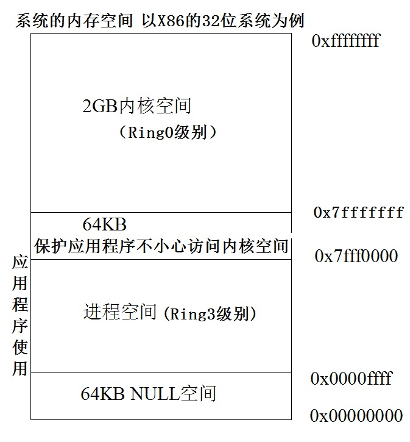X64（AMD64）的内存布局与X86的内存布局类似，不同的地方在于各自空间的范围和大小不同，同时X64下还存在着一些空洞（hole）。在X64内存理论上支持最大264的寻址空间，但实际上这个空间太大了，目前根本用不完，因此实际上的X64系统一般都只支持到40多位（比如Windows支持44位最大寻址空间为16TB，Linux 支持48位最大寻址空间256TB等），支持的空间达到了TB级别。但是，无论是在内核空间还是在应用层空间，这些上TB的空间并不都是可用的，存在着所谓的空洞（HOLE）。
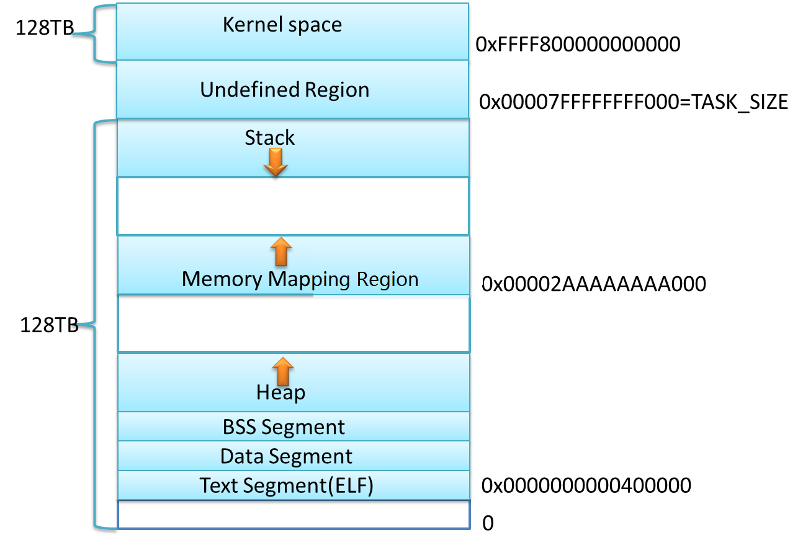1byte=8bit
1个bit只能存储2个信息：0,1
1个byte能存储：2^8-1个信息：【-128，127】or【0，255】
数据存储位置：寄存器，内存，磁盘等
大家知道，整数包括负数，零，和正数。计算机中的整数分为有符号数和无符号数。有符号数的最高位表示符号：即最高位为0，表示正数，最高位为1，表示负数。无符号数表示非负数，整个位数都用来表示整数的值。 如果用N位来表示整数，那么有符号数的范围为：[-2^(N-1)，(2^(N-1))-1]；无符号数的表示范围为[0，(2^N)-1]。比如，用8位来表示有符号整数数，由于第8位用于表示了符号，因此，整数的表示范围为[-128，+127]；如果是表示无符号整数，则表示范围为[0，255]。
整数的编码
整数的编码分为原码、反码、和补码。计算里使用的是补码的存储方式。它们的定义如下：
原码：在数值前面增加了一位符号位（即最高位为符号位），该位为0表示正数，该位为1表示负数，其余位表示数值的大小。
反码：正整数的反码就是其自身，而负整数的反码可以通过对其绝对值逐位求反来求得。
补码：正数的补码与原码相同，负数的补码就是对该负数的绝对值求反加1，0的补码是0。
因为计算机是以补码来存储整数的，所以补码就显得很重要。那么如何计算整数的补码呢？
下面以具体例子来说明。
100的补码：01100100 0的补码：0 -100的补码：绝对值：01100100 -->取反加1：10011011+1 -->10011100 1的补码：00000001 -1的补码：绝对值：00000001 -->取反加1：111111110+1 -->11111111 127的补码：01111111 -128的补码：绝对值：10000000 -->取反加1：01111111+1 -->10000000
在计算机系统中，数值一律用补码来表示（存储）。下表是一个原码，反码，补码的表示例子。
知道了一个补码，如何求出它对应的值呢？
正数：就是本身
0:0
负数：补码取反+1就是它本身绝对值。
从定义可以看出，正数的补码，反码，原码相同。0的补码就是本身。那么负数的原码和补码如何转换呢？已知一个负数求补码方法：绝对值原码按位求反加1。已知负数补码求负数方法：符号位不变，其他位按位求反加1。对于8位整数来说，补码的表示范围为[-128，127]。 大家应该记住一些常见的补码的表示，这些数包括但不局限于下面表中列出的数：
那么有了原码，计算机为什么还要用补码呢？
来看看它们的运算情况。 假设字长为8位 ，那么原码的运算方式为：1 - 1 = 1 + ( -1 ) =(00000001) + (10000001) = (10000010) = -2，这显然不正确。原码在两个整数的加法运算中是没有问题的，问题出现在带符号位的负数身上。
原码无法满足运算要求，因此对除符号位外的其余各位逐位取反就产生了反码。反码的取值空间和原码相同且一一对应。下面是反码的减法运算：1 - 1 = 1 + ( -1 )= (00000001) + (11111110) = (11111111) = ( -0 ) 有问题。1 – 2 = 1 + ( -2 ) = (00000001) + (11111101) = (11111110) = ( -1 ) 正确。反码的问题出现在(+0)和(-0)上，因为在人们的计算概念中零是没有正负之分的。
再来看补码的加减运算如下：1 - 1 = 1 + （-1） = (00000001) + (11111111) = (00000000) = 0正确。1 – 2 = 1 + （-2） = (00000001) + (11111110) = (11111111) = ( -1 ) 正确。。
通过补码的运算，可以看出补码的设计目的是：
⑴ 使符号位能与有效值部分一起参加运算，从而简化运算规则。
⑵ 使减法运算转换为加法运算，进一步简化计算机中运算器的线路设计。
此外，在补码中用-128代替了-0，所以没有+0和-0之分，符合常理，所以补码的表示范围为： -128~0~127共256个。
注意-128没有相对应的原码和反码，-128的补码为：10000000。
整数的存储
整数的存储分为高位优先存储（big-endian）和低位优先存储（little-endian）。
高位优先存储：高位首先存在低地址。
低位优先存储：低位首先存在低地址。
假设一个32位整数的值为25000。25000的补码为： 0x000061a8，共4个字节(注意到，在十六进制中，2个数为一个字节），其中最左边的00是最高位，然后依次为00次高位，61次低位，a8低位。 那么在内存中如何存放这4个字节呢？也就是内存中的低地址是优先存放最高位还是最低位呢？ 下图是这一个整数的低位优先和高位优先的存储实例：
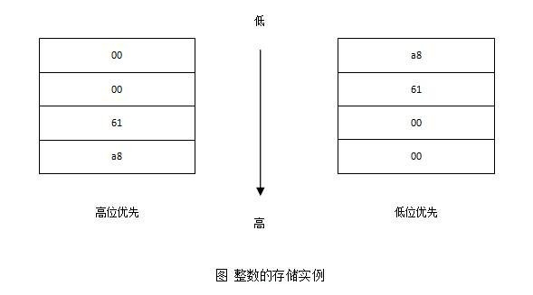在上图中，高位优先的系统中，会优先把高位的00存放在低地址；而低位优先的系统正好相反，将低位a8优先存放在内存中的低地址。
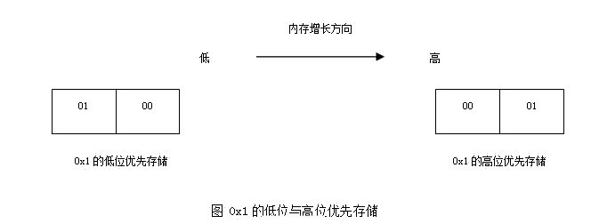如何判断一个系统是低位优先或者高位优先？这个问题曾经在笔者面试SUN公司的时候被考查过，并且要求写出判断代码。 首先，来看整数1在高位优先和低位优先的系统中的存储。如下图所示：
通过上面的存储格式可以判断出，低位优先时，低字节的值为1，高位优先时，低字节的值为0。所以，给出下面2种判断方法的代码：
//第一种方法：
bool is_integer_lower_store()
{
int x = 0x1;
char *p = (char *)&x;
if (*p == 1)
return true;
else
return false;
}
/
/第二种方法：
typedef union {
char c;
int a;
} U;
bool is_integer_lower_store()
{
U u;
u.a = 1;
if (u.c == 1)
return true;
else
return false;
}
在这两种判断方法中，都利用了0x01在低位优先中最低字节值为1，在高位优先中最低值为0的特性。用一个指向字符的指针就可以获得int整数的第一个字节。获得了第一个字节的值，就可以根据上面的特性来判断出系统究竟是低位优先还是高位优先。
题目：设计一个算法，改变一个整数的存储方式，即低位优先<-->高位优先
int change_int_storage(int val)
{
int iRun = 0, i = 0;
char* pByte= (char*)&val; // 指向整数的低地址，取一个字节
i = sizeof(int)-1;
while (i >= 0)
{
iRun |= *pByte<<(i*8);
//把整数的第1字节，第2字节，第3字节，第四4字节一次左移24位，16位，8位和0位
pByte++;//前进一个字节
i--;
}
return iRun;
}
网络字节序
由于现实的系统中，不同的系统采取的整数存储的方式不一样，有的使用的是低位优先，有的使用的是高位优先存储方式。 那么将一个整数值，通过网络从一台机器发送到另外一台机器之后，整数的存储方式可能就变了。
因此，为了使得整数在传输的过程中保持值不变，需要 定义一个网络字节序和本地字节序。 也就是，把一个整数传输到网络的时候，统一转化为网络字节序。当这个整数通过网络传输到对方本地之后， 再统一把网络字节序转化为对应的本地字节序。 实际上，网络字节序是高位优先存储方式。而到达对方系统之后，再根据对方使用的整数存储方法，转化为对应的本地字节序。
比如网络上有2台机器，一个整数0x12345678，从一台系统中使用的是低位优先存储，传输到另外一台使用的是高位优先存储方式的机器中。 那么整数的传输为：
本地字节序：0x78563421-->网络字节序：0x12345678-->本地字节序：0x12345678
在实际的网络编程中，我们一般使用htonl()来实现本地字节序到网络字节序转换； 使用ntohl()来实现从网络字节序到本地字节序的转换。
思考题（阿里巴巴2015实习生笔试真题）：
IP数据报头采用（）字节序，在此字节序下从低地址到高地址0x1234的表示形式为 （） 。
A.big_endian,0x12 0x34 0 0 B.little_endian,0x34 0x12 0 0 C.big_endian,0 0 0x12 0x34 D.little_endian, 0 0 0x34 0x12
在计算机里，最基本的存储单位为字节（Byte，常说的大B），1个字节包含8位（bit，常说的小b）。计算机的数据就是一个字节一个字节的形式存储在内存中。
内存的大小单位有KB，MB，GB，TB等，它们之间的关系是：
1KB = 1024B 1MB = 1024*1024B 1GB = 1024*1024*1024B 1TB = 1024*1024*1024*1024B
计算机存储单位一般用B，KB，MB，GB，TB，PB，EB，ZB，YB，BB来表示。
1KB (Kilobyte 千字节)=1024B 1MB (Megabyte 兆字节 简称“兆”)=1024KB 1GB (Gigabyte 吉字节 又称“千兆”)=1024MB 1TB (Trillionbyte 万亿字节 太字节)=1024GB，其中1024=2^10 ( 2 的10次方) 1PB（Petabyte 千万亿字节 拍字节）=1024TB 1EB（Exabyte 百亿亿字节 艾字节）=1024PB 1ZB (Zettabyte 十万亿亿字节 泽字节)= 1024 EB 1YB (Yottabyte 一亿亿亿字节 尧字节)= 1024 ZB 1BB (Brontobyte 一千亿亿亿字节)= 1024 YB
大家知道，整数包括负数，零，和正数。计算机中的整数分为有符号数和无符号数。有符号数的最高位表示符号：即最高位为0，表示正数，最高位为1，表示负数。无符号数表示非负数，整个位数都用来表示整数的值。比如，有下面2个有符号数： 10000110，由于最高位为1，所以是负数；00000110，由于最高位为0，所以为正数。然而，假设把上面2个数当作无符号数的话，那么就都是正数了。
计算机中的数，是以二进制存在于内存中的。关于数的表示，一般有二进制，十六进制，八进制，十进制这几种表示方法。
在C语言里，十六进制的表示方法是0x或者0X开头。而十六进制里的位数包括0，1，2，3，4，5，6，7，8，9，A(a)，B(b)，C(c)，D(d)，E(e)，F(f)。比如0x12abefac。而八进制以0开始，它的位数包括0，1，2，3，4，5，6，7。比如012347。二进制的数是由0和1组成的数，但在C语言里没有直接的二进制表示方法，即没有101101101 这种表示方法。
对于数的表示，需要经常把一个十进制的数与二进制数，十六进制数进行转换。
1. C语言：0x/0 u/l/ul/i64/ll/LL 2. 汇编：十六进制：1aH；八进制：17O；十进制：12D；二进制：110B 3. 十进制： 100 4. 十六进制：0x100 =1*16^2+0*16^1+0*16^0=256 5. 八进制：0127=7*8^0+2*8^1+1*8^2=87 6. 二进制：101101(C语言里没有单独的二进制表示方法）
10进制转换为2进制
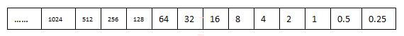首先，在表格里写出在二进制里，每个位表示的整数的数值。比如，在上图里，第0位表示1，第1位表示2， 第2位表示4，第3位表示8，......，-1位为0.5，-2位为0.25，-3位为0.125，第N位表示的值为2^N。对于一个整数X， 首先在表格中找到比X小的最大数，比如如果X为100，那么在上面的表格里，比X小的最大数就是64， 所以，X在二进制中，此位为1；然后，用X减去该数，从右边表格里继续找比剩下小的最大数。一直到X最后变为0。
比如，以100.25为例子。 如下图：
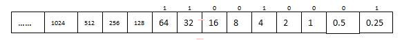先看整数部分：首先比100小的最大数是64，因此，该位记为1。100-64=36。比36小的最大数是32，因此，32所在的位为1。36-32=4。所以，比4小的最大数为4，所以4所在的位为1。4-4=0，因此转换结束。于是，100的二进制为“11001”。
再看小数部分：0.25，比0.5要小，所以0.5位应该记为0，而0.25位恰好相等，所以0.25位记为1。 因此，100.25对应的二进制位：11001.01
2进制转换为10进制
2进制转化为10进制，同样可以用表格法，分别将各个位对应的值相加，就可以得到对应的十进制。比如，对于二进制：1100101.11，其中各位对应的值为：
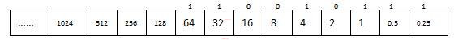所以，1100101.11对应的10进制值为：64+32+4+1+0.5+0.25=101.75。 2进制转换为10进制公式为：
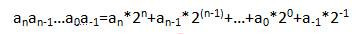2进制转换为16进制
从右往左，把二进制分成4个位一组。左边不够4位，以0填充。然后将每4位转化为16进制的一个数。
比如： 1100100，从右往左按照4位为一组，进行组合结果为：0110 0100（左边补0）。其中0100对应的10进制为4，对应的16进制也是4。0110对应的10进制为6，对应的16进制也是6。所以，1100100对应的16进制为0x64。 为了方便转换，请记住下面的1,2,...a,b,c,d,e,f与二进制和10进制的对应关系：
4个bit表示的2进制：16进制：10进制对应关系：
16进制转换为2进制
16进制转化为2进制，也很简单。就是把依次对每个十六进制数中的每一位转换为4位2进制对应的值， 然后按照顺序排列起来就是对应的二进制。比如：对于整数0x80ac147f
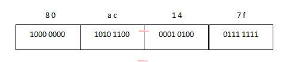0x80ac147f=1000 0000 1010 1100 0001 0100 0111 1111
注意：转换的时候，一定要以字节为单位，在十六进制中，2位为一个字节。
16进制转化为10进制
将16进制转化为10进制的方法：
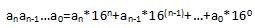比如：
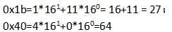10进制转换为16进制
10进制可以直接转化为16进制，只需要依次除以16，然后得到的余值，就是16进制。但这种方法，还是不大方便。方便的方法 ， 是先把10进制数转化为2进制数，然后再把2进制数转化为16进制数。
比如，100对应的二进制我们很快就能求出来是：1100100，把这个2进制按照4位为一个单位进行转化，0110 0100-->64所以对应的16进制为：0x64。
计算机中的数分为整数与实数。对于实数，绝大多数现代的计算机系统采纳了所谓的浮点数表达方式。 这种表达方式利用科学计数法来表达实数，即用一个尾数（Mantissa ）， 一个基数（Base），一个指数e(阶码E=e+127或者e+1023)（exponent）以及一个表示正负的符号(Sign)来表达实数。 比如 123.45 用十进制科学计数法可以表达为 1.2345 × 10^2 ，其中 1.2345 为尾数，10 为基数，2 为指数。 浮点数利用指数达到了浮动小数点的效果，从而可以灵活地表达更大范围的实数。 又对于一个二进制的数比如1011.01，用科学计数法也可以表示为：1.01101*2^3，其中 1.1101为尾数，2为基数，3为指数。
一、浮点数的存储方法
计算机中是用有限的连续字节保存浮点数的。 保存这些浮点数当然必须有特定的格式， C/C++中的浮点数类型 float 和 double 采纳了 IEEE 754 标准中所定义的单精度 32 位浮点数和双精度 64 位浮点数的格式。 在 IEEE 标准中，浮点数是将特定长度的连续字节的所有二进制位分割为特定宽度的符号域，指数域和尾数域三个域， 其中保存的值分别用于表示给定二进制浮点数中的符号，指数和尾数。 这样，通过尾数和可以调节的指数（所以称为"浮点"）就可以表达给定的数值了。
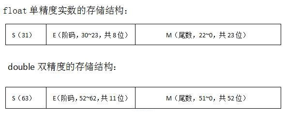根据国际标准IEEE 754，任意一个二进制浮点数V可以表示成下面的形式：
V = (-1)^s×M×2^E
（1）(-1)^s表示符号位，当s=0，V为正数；当s=1，V为负数。
（2）M表示有效数字，大于等于1，小于2，但整数部分的1不变，因此可以省略。
（3）2^E表示指数位。
比如：
对于十进制的5.25对应的二进制为：101.01，相当于：1.0101*2^2。所以，S为0，M为1.0101，E为2。
而-5.25=-101.01=-1.0101*2^2.。所以S为1，M为1.0101，E为2。
对于32位的单精度数来说，从低位到高位，尾数M用23位来表示，阶码E用8位来表示，而符号位用最高位1位来表示，0表示正，1表示负。对于64位的双精度数来说，从低位到高位，尾数M用52位来表示，阶码用11位来表示，而符号位用最高位1位来表示，0表示正，1表示负。
IEEE 754对有效数字M和指数E，还有一些特别规定。 前面说过，M可以写成1.xxxxxx的形式，其中xxxxxx表示小数部分。IEEE 754规定，在计算机内部保存M时，默认这个数的第一位总是1，因此可以被舍去，只保存后面的xxxxxx部分。比如保存1.0101的时候，只保存0101，等到读取的时候，再把第一位的1加上去。这样做的目的，是节省1位有效数字。以32位浮点数为例，留给M只有23位，将第一位的1舍去以后，等于可以保存24位有效数字。
对于E， 首先，E为一个无符号整数（unsigned int）。这意味着，如果E为8位，它的取值范围为0~255；如果E为11位，它的取值范围为0~2047。然而科学计数法中的E是可以出现负数的，所以IEEE 754规定，E的真实值必须再减去一个中间数，对于8位的E，这个中间数是127；对于11位的E，这个中间数是1023。 比如，2^2的E是2，所以保存成float 32位浮点数时，必须保存成2+127=129，即10000001。
此外，E还需要考虑下面3种情况：
（1）E不全为0或不全为1。这时，浮点数就采用上面的规则表示，即指数E的计算值减去127（或1023），得到真实值，再将有效数字M前加上第一位的1。
（2）E全为0。这时，浮点数的指数E等于1-127（或者1-1023），有效数字M不再加上第一位的1，而是还原为0.xxxxxx的小数。这样做是为了表示±0，以及接近于0的很小的数字。
（3）E全为1。这时，如果有效数字M全为0，表示±无穷大（正负取决于符号位s）；如果有效数字M不全为0，表示这个数不是一个数（NaN）。
二、浮点数的转换方法
浮点数的转换方法可以分为如下2种情况：
1.给出一个浮点数，计算对应的二进制
比如给定一个浮点数，7.25，如何计算它对应的单精度和双精度的二进制呢？
首先，十进制浮点数7.25对应的二进制(二进制，十进制和十六进制转化方法：点击这里)为：111.01。用二进制的科学计数法为：1.1101*2^2。所以，按照上面浮点数的存储结构，得出符号位为：0，表示正数；阶码（指数）E单精度为2+127=129，双精度为2+1023=1025；小数部分M为：1101（小数本来为1.1101，因为所有的小数中，小数点前面的值都是1，所以不用存储，只需要存小数点后面的数，在读取的时候，再自动把前面的1加上即可）。
所以，
单精度的二进制位：0 10000001 1101 0000000000000000000;
双精度的二进制位：0 10000000001 1101 000000000000000000000000000000000000000000000000
第一步:将178.125表示成二进制数:(178.125)(十进制数)=(10110010.001)(二进制形式);
第二步:将二进制形式的浮点实数转化为规格化的形式:(小数点向左移动7个二进制位可以得到)
10110010.001=1.0110010001*2^7 因而产生了以下三项:
符号位：该数为正数,，所以符号位为0，故第31位为0,占一个二进制位.
阶码：指数(e)为7,故其阶码为127+7=134=(10000110)(二进制),占从第30到第23共8个二进制位.
（注：指数有正负即有符号数，但阶码为正即无符号数，所以将e加个127作为偏移，方便指数的比较）
尾数为小数点后的部分, 即0110010001.因为尾数共23个二进制位,在后面补13个0,即01100100010000000000000
所以,178.125在内存中的实际表示方式为:
0 10000110 01100100010000000000000
2.给出一个浮点数的二进制，计算对应的十进制值
而如果而如果给出了一个浮点数的二进制，如何计算它对应的十进制，其实就是1中的逆运算。分别求出对应的符号位，阶码指数E和小数M部分，就可以了。比如，给定一个单精度浮点数的二进制存储为：
0 10000001 1101 0000000000000000000;
那么对应的符号为：0，表示正数；阶码E为：129-127=2；尾数为1.1101。所以对应的二进制科学计数法为：1.1101*2^2，也就是111.01即：7.25。
此外，如何将一个字符串转化为实数呢？比如："3.1415926"-->3.1415926。下面给出方法：
double atof(char *s)
{
double val, power;
int i, sign;
assert(s!=NULL);
for (i = 0; isspace(s[i]); i++)
;
sign = (s[i] == '-') ?-1:1;
if (s[i] == '+' || s[i] == '-')
i++;
//处理实数中整数部分
for (val = 0.0; isdigit(s[i]); i++)
val = 10.0 * val + (s[i] - '0');
if (s[i] == '.')
i++;
//处理实数小数部分
for (power = 1.0; isdigit(s[i]); i++)
{
val = 10.0 * val + (s[i] - '0');
power *= 10;
}
return sign * val / power;
}
思考题1（阿里巴巴2015实习生笔试）：
小数值1.5625的二进制表示是？
A.101.1001 B.0.001 C.101.111 D.1.1001
思考题2：
试分析下列程序为什么输出为0？
int main(void)
{
int i = 15; //0 0000000 00000000 00000000 00001111
float m = (float)i;
printf(“%d\n”, m);
return 0;
}
输出浮点数的二进制位：
#include<stdio.h>
void print_float(float f)
{
int count = sizeof(f);
char *p = (char *)&f;
int bitnum=0;
while(count>0)
{
char tmp = *(p+count-1);
int shift = 0x80;
for(int i = 8;i>0;i--)
{
if(tmp&shift)
{
printf("1");
bitnum++;
if(bitnum==1)
{
printf(" ");
}
else if(bitnum==9)
{
printf(" ");
}
}
else
{
printf("0");
bitnum++;
if(bitnum==1)
{
printf(" ");
}
else if(bitnum==9)
{
printf(" ");
}
}
shift >>= 1;
}
count--;
}
printf("\n");
}
int main()
{
float f = -99.75f;
print_float(f);
return 0;
}
有一句话说得好：英语是计算机的母语，是程序的母语，所以必然是程序员的母语。大家知道，计算机诞生于英语为母语的国家。这就注定了，计算机与英语是分不开的。英语能力对于计算机程序设计的学习无疑是非常重要的。英语不好，学习编程会受到很大的影响。所以，在学习程序设计的同时，提高自己的英语水平是必须的。那么，英语水平对于计算机编程有哪些影响呢？
程序设计里面的语言是以英语的形式存在的。其中就有很多关键字。更重要的是，写程序时候的变量起名也很讲究。用英文单词或者缩写起名字的可读性要比使用拼音的可读性强得多。能起可读性强的英语变量名字，是写程序的一个重要的方面。新生的小孩的父母为他取名会费劲心血，而程序员为变量取个可读性好的名字，也很重要。
程序中的变量名、函数名起得好不好是决定代码质量和可维护性的最关键因素。高质量的代码应该是这样的：代码基本上是自解释的（self-explanatory），不需要太多注释，不管代码的规模有多大，具有相关知识背景的读过文档的人都可以立刻上手、立刻参与维护和开发。要想使代码能够自解释，给变量和函数起个好名字很关键，很显然，只能用英文起名字，一是用汉语拼音起名字可读性很差，二是英文单词通常比汉语更expressive（看吧，如果用汉语来说，就得说“表达能力更强”、“更有表现力”这么罗嗦），由于程序的复杂性，变量和函数往往表示一些很抽象的概念，起个既准确又简洁的名字并不容易，可是很多时候，用汉语需要很多字才能说清楚的一件事，用英文一个单词再加点词形变化就能说清楚了。
另外，大量的技术首先是通过英文技术书出版的。因此，想要第一时间获得新技术，就得首先要会英语，能够阅读英语技术书籍。虽然很多经典的英语书籍翻译成了中文，但是也并不是所有书籍能被翻译成中文的。而且中译本的质量也可能参差不齐。当然，如果有好的中文译本，建议也可以直接看中文，以提高学习效率。
除了大量的技术书籍之外，更多的技术文档，手册，以及Windows开发的技术参考MSDN都是用英语表述的。如果说书籍有人去专门翻译，那么这些技术文档也许就很难有人为你翻译了。你只能和英语面对面，去啃这些技术文档。甚至有的论坛里对一个问题的解决也是通过英语来讨论的。要想理解其中的解决方法，你也得会英语才能读懂。
其次，与计算机相关的很多问题，首先可以利用搜索引擎去解决。你遇到的每一个问题，都不可能是第一个遇到的，没准网上就有了现成的解决方案。所以，遇到问题，第一就是要会利用搜索引擎去解决问题。由于计算机是一门西方引入的科学，因此，有的问题在使用搜索关键词的时候，如果用中文很难搜到，没准使用对应的英文作为关键词，就很快能搜到相应的问题答案。因此，学会英语，对于使用用英文去向搜索引擎寻找答案也具有很大的优势。
既然英语这么重要，那么很多人可能就会比较着急的要问了，究竟要多好的英语才能有资格学习程序设计呢？英语不好难道就不能学习程序设计了呢？大家知道，英语能力分为听说读写这四项技能。而在计算机程序设计领域里，读最重要，写次之，说和听对程序设计并无太大的关联，除非你要进一个外企工作，必须与老外用英语交流。程序员需要使用英语阅读大量的文档资料，需要用英语来写程序，写注释等。因此，平常通俗的被大家所批判的哑巴英语，在程序设计里面，依然可以有用武之地，只要你会读会写，就不会影响大家。
实际上，高中英语的水平，就不会影响你进一步使用计算机相关的英语了。因为，高中之后，英语的语法基本上都涉及了，唯一需要补充的就是大家的英语词汇问题了。
那么，如果英语很差，怎么提高自己的英语水平呢？这要取决自己在英语的哪块比较欠缺。如果语法比较差，那么请尽快找本讲语法的书籍，恶补一下英语语法。如果语法没什么问题了，那么请通过大量阅读来提高自己的词汇量和语感。笔者在大学学英语的时候，就明白了学习英语的最好的途径就是大量的阅读，并记住那些遇到的生词。有人建议在阅读过程中，遇到生词就放过。笔者持相反的观点。遇到生词，都应该去查词典，然后记住它，这样就能快速的提高自己的词汇量。
从接触计算机程序设计的时刻开始，身边的很多老师，师兄，同学，朋友都在告戒到，计算机与数学有很大关联，实际上，计算机就起源于数学理论。因此，嘱托大家要好好学习数学。计算机专业就开设了很多数学的专业课，计算机专业考研也把数学作为必考内容。
很多朋友，因为数学水平不足而没有信心学习计算机程序设计，畏惧不前。在这里，笔者想要提出不同的看法。实际上，数学确实对计算机很重要，这一点毋庸质疑。但是，数学一般应用在一些复杂的算法和复杂问题的解决上。比如搜索引擎，比如图形学等相关研究领域。这些问题的解决，一般是计算机领域的科学家致力于的。
而大多数情况下，大家学习计算机程序设计，并不需要去解决这么复杂的理论问题，大多数解决的是一些实际的应用工程问题。这些问题的解决，对数学的要求就没有那么高了。
通俗的讲，如果大家只打算做个程序员，而不是计算机科学家，那么数学知识的掌握，就不要求那么高了。更具体的讲，只要具备高中数学基础，学习计算机程序设计是没有任何问题的。
笔者从事计算机IT工作这么久，也很少在实际项目中用到很深的数学理论知识。
当然，数学作为一门思维体操，数学体现出来的思维方式，解决问题的思想和方法，是值得程序设计领域借鉴的。我们只需要补充如下的基础数学知识即可：
1， 集合定义与运算：子集，交集，补集，并集 2， 数列：等差数列，斐波那契数列 3， 不等式求解 4， 简易逻辑： （0）布尔值：0,1,true,false （1）命题：判断真（1）或假（0）的语句 （2）或(or∨)，且(and∧)，非(not －) （3）命题形式：p,q,p或q,p且q,非p （4）求真值。若p=1,q=0, 那么p或q=? p且q=?非p=? 非(p且q)=? （5）逻辑推理 5， 幂运算：n2,2n 6， 对数运算loga1=0 logaa=1 7，函数： （1）函数定义 （2）定义域，值域 （3）奇函数，偶函数，增函数，减函数
但总的来说，不要因为数学不好，而不敢学习计算机程序设计。
本页共1297段，47795个字符，89759 Byte(字节)